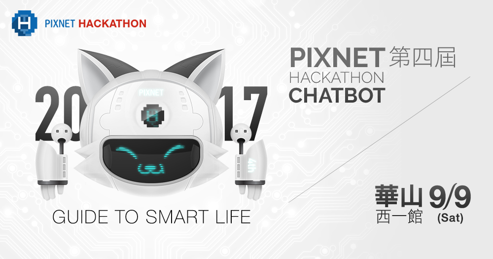
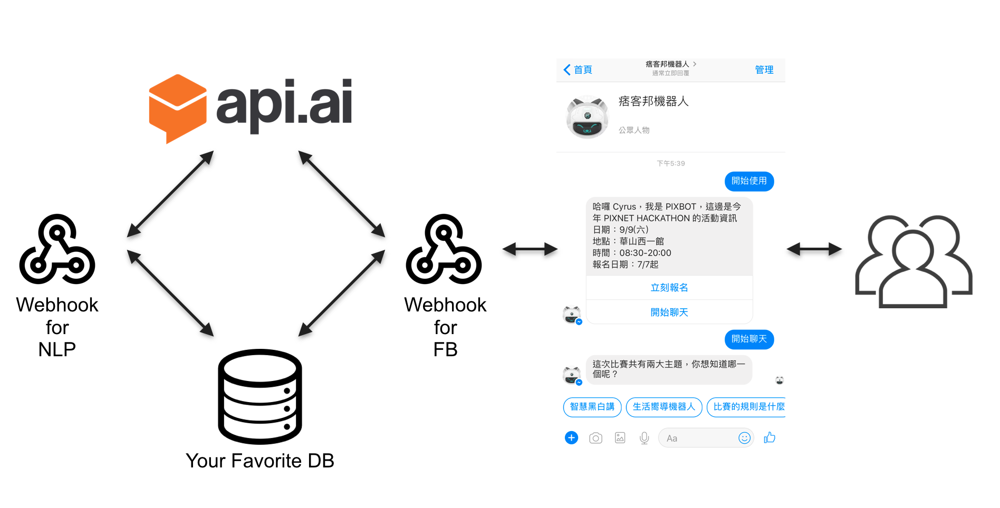
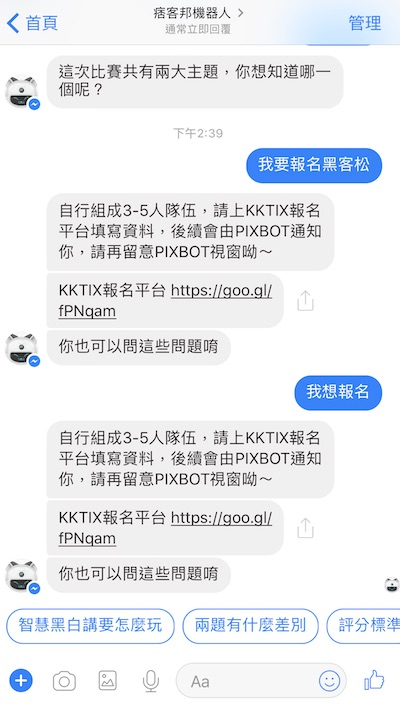
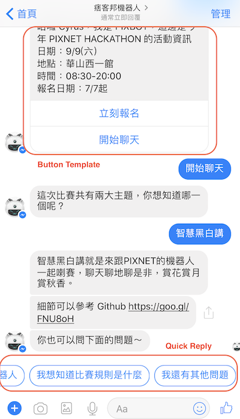

PIXNET HACKATHON chatbot 製作過程：（一）pixbot 的誕生
這系列文章主要會提到：
- 在 facebook 平台建立 chatbot 的過程
- 使用 api.ai 做自然語言處理
- 使用者與 pixbot 對話記錄的文字探勘

從基本功能做起
接收訊息
簡單來說，一個 bot 可以分成幾個部分。首先是 messenger 的本體，可以是 facebook messenger、line、slack 等平台，架設在平台上的 bot 有時也稱為 app。由於 messenger 平台上的訊息通常使用 json 格式進行傳遞，因此理想的狀況是，我們只需要專注在 bot 的開發，當開發完成後，同樣的 bot 就可以佈署在不同的平台上。
事實上，要做到完全無痛轉移還是有些困難的。這是由於各家平台使用的 json 欄位不同所致。例如 facebook，使用者在 messenger 輸入訊息後，傳送到 webhook 的資料格式如下：
因此，我們需要一個 parser 來解析上述的 json。這個 parser 把從 facebook 傳送過來的 json 檔案解析成自定義的格式。提取出來的內容有：
- sender：哪位使用者向 bot 傳送了訊息
- type：傳遞的訊息種類
- text：訊息內容 def fb_message_receiver(data):"""取得 fb 送來的描述，分成 sender, send_type, text 回傳"""query = data['entry'][0]['messaging'][0]sender = query['sender']['id']r = {"text": "","sender": sender,"type": ""}# 這一段處理一般的訊息傳遞if query.get("message"):if query['message'].get('quick_reply'):p_type = query['message']['quick_reply']['payload']text = query['message']['text']r['text'] = textr['type'] = p_typeelse:text = query['message']['text']r['text'] = textreturn r# 這裡處理訊息以外的 payload# 例如 facebook 提供的按鈕範本if query.get('postback'):p_type = query['postback']['payload']r['type'] = p_typereturn rreturn r
由此可見，當傳送的 json 格式不同時，parser 就必須重新改寫。當我們把 facebook 傳送過來的訊息透過 parser 解析成 sender 、 type 、 text 等欄位之後，就可以根據 query 進行相對應的處理。上面的訊息會被我們解析成以下格式：
我們可以很容易知道，這是由 USER_ID 這個人傳送過來的 純文字訊息 ，內容是 安安你好 ，我們便可以由此產生相對應的回覆。
傳送訊息
Facebook messenger 回覆訊息的方式很簡單，只要呼叫 facebook 的 graph api 即可。文件 上提供了一個簡單的 cmd 範例：
這裡的 USER_ID 與前述相同， PAGE_ACCESS_TOKEN 則是粉絲專頁的存取權杖，到應用程式的主控台即可取得。透過上面這個範例，可以很容易寫出我們自己的 sender：
參數 payload 是傳送給 facebook 的內容，依照不同的回應方式而有不同的格式。當回應為純文字時， payload 的格式就如同上面的範例一樣：
如果想要傳送圖片、影片、檔案，甚至是按鈕等功能，那麼 payload 的格式就會複雜一些。不過，綜合以上程式（把 payload 塞到 fb_message_sender() 之中），我們已經可以在 facebook messenger 平台進行基本文字訊息的拋接了。
大家或許有個疑問：「根據上面的程式範例，user 傳送 “安安你好” 這個訊息給 bot，bot 應該向 user 打招呼才對呀，怎麼會回傳 “hello, world!” 回去呢！？」
的確，當然不應該是這樣，但這部份讓我們提到 API.AI 時再回頭說明吧！
The Whole Picture

前面我們提到的部份，主要集中在圖的右半部，也就是使用者傳送訊息給 bot，bot 傳送訊息給使用者。請注意我這裡的用詞「傳送訊息」而非「回覆訊息」。原因是在圖的右半部中，我們只能完成互相「傳送訊息」的功能。要讓 bot 理解訊息，然後「回覆訊息」，我們需要引入語意分析的功能。
自然語言處理（Natural Language Processing）
user: 哈囉 pixbot, 我想要報名 9/9 的黑客松
當我們收到這樣的訊息，如果 pixbot 還是只會回答 “hello, world!”，那我們乾脆不要做 bot 了。要理解這個句子，並且給出適當的回覆，可以分為下面幾個層次：
- Entity
- Intent
以這個例子來說，9/9 、 黑客松 ，可以算是這個句子中的 entity，而 報名 就是這個句子的 intent。當我們知道了 intent 是 報名 時，我們呼叫 sign_up() 這個函數，並帶入 entity 作為參數。換句話（程式語言）說：
就是我們應該給出的回覆。
要方便取得一個句子的 entity 與 intent，我們需要引入 NLP 的工具，讓我們管理與使用者的對話，以便做出適當的回覆。在這邊，我們使用 API.AI 作為這個 bot 的 NLP 工具，類似的 NLP 工具還有以下列出等幾項，大家可以自行選擇。
以我們選用的 API.AI 來說，我們可以把「報名」、「我想報名」、「我要報名」、「我要報名黑客松」這些句子通通設定成指向「報名」這個 intent，並且設定當 intent 為「報名」時，bot 所要回答使用者的句子。設定完成之後，只要是指向「報名」這個 intent 的問句，bot 就會給出相對應的回答囉。

因此，我們 bot 的 facebook webhook 也需要和 API.AI 進行串接，以便收到 API.AI 幫我們分析完成的 intent。只要妥善管理對話情境，並完成 API.AI 的設定，一個具有最基本對話功能的 chatbot 就完成了！
在今年黑客松的報名截止後，我們會讓 pixbot 具有查詢是否報名成功的功能。
user: 我有報名成功嗎？
pixbot: 請告訴我你的報名 email
user: abc123@pixnet.tw
pixbot: 查詢完成，恭喜您報名成功！
這是稍微複雜一點的功能，當 pixbot 收到「我有報名成功嗎？」時，API.AI 會將句子解析為「檢查報名成功」的 intent，並直接呼叫 webhook 進行報名成功與否的檢查。另外，如果想要將一些重要資料記錄下來的話，我們也需要一個資料庫來進行記錄。這些也就是上面那個架構圖的左半部囉。
傳送訊息範本
很多開發者的心得是「做 bot 除了程式設計之外，更重要的是情境設計」，我們也不例外。我們發現，當使用者一開始接觸到 pixbot 的時候，大家不清楚要如何使用。像是我們預設使用者會提問「活動主持人是誰？」，也預先設計好了對應的回答。但實際上可能根本沒人想到這個問題，導致我們一開始設計好的所有對話可能幾乎沒有被問到。因此，我們重新設計使用情境，讓使用者能更清楚 pixbot 的功能。這部份我們就來談談如何製作 Button Template 與 Quick Reply 。

Button Template
與發送一般文字訊息給使用者略有不同，要傳送 button template，這裡的 payload 需改成以下格式：
這是當使用者第一次對 pixbot 說話時，pixbot 傳送給使用者的訊息。可以看到裡面的 payload 欄位有一個值 DEVELOPER_DEFINED_PAYLOAD_FOR_START 。意思是，當使用者選擇了「開始聊天」這個行為，我們的 webhook 將會收到這個 payload。我們就可以針對收到的 payload 種類進行處理。
咦，前面不是說只要靠 API.AI 來做 intent 的管理就好了嗎？沒錯，但那僅限於傳送純文字的部份。在這個地方，當使用者按下「開始聊天」時，雖然 messenger 上會顯示使用者輸入了「開始聊天」，但在 webhook 中，我們並不是收到純文字的訊息：
因此我們若將「開始聊天」作為純文字來解析，是收不到任何回應的。這也是為什麼我們前面的 parser 之中，存在以下幾行程式碼的理由。
當我們發現使用者回傳的訊息格式，存在著 payload 欄位時，我們將 payload 的形態，也就是 DEVELOPER_DEFINED_PAYLOAD_FOR_START 。這樣一來，我們就知道這代表使用者按下「開始聊天」的事件，便可以來做後續的處理囉。
Quick Reply
在我們的 pixbot 之中，當使用者按下「開始聊天」後，pixbot 會提供三個選項給使用者做選擇
user: 開始聊天
pixbot: 這次比賽共有兩大主題，你想知道哪一個呢？quick_reply_1（智慧黑白講）
quick_reply_2（生活嚮導機器人）
quick_reply_3（比賽的規則是什麼）
那麼，我們要怎樣在傳送給使用者的訊息中，加上下方的 quick reply 呢？其實非常簡單，只需要修改傳送訊息 時提到的 payload 內容即可。把下面的 payload 塞到 fb_message_sender() 函數中，就可以發送帶有 quick reply 的訊息囉。
這邊請注意，當使用者按下了 「智慧黑白講」的按鈕之後，這按下按鈕的動作仍然不屬於純文字訊息，必須透過下列判斷式來進行後續的處理哦！
這篇文章記錄的是 pixbot 的誕生過程，要讓 pixbot 理解語意，我們後面會提到 API.AI 的操作與設定。